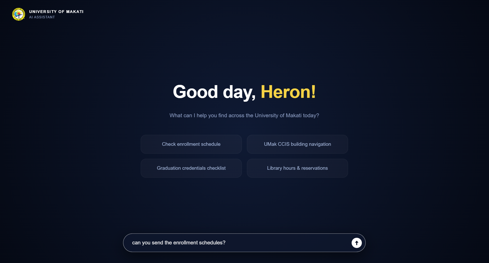
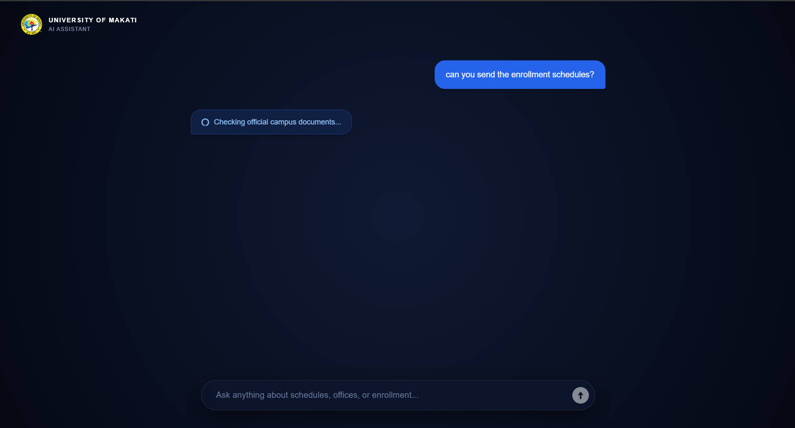
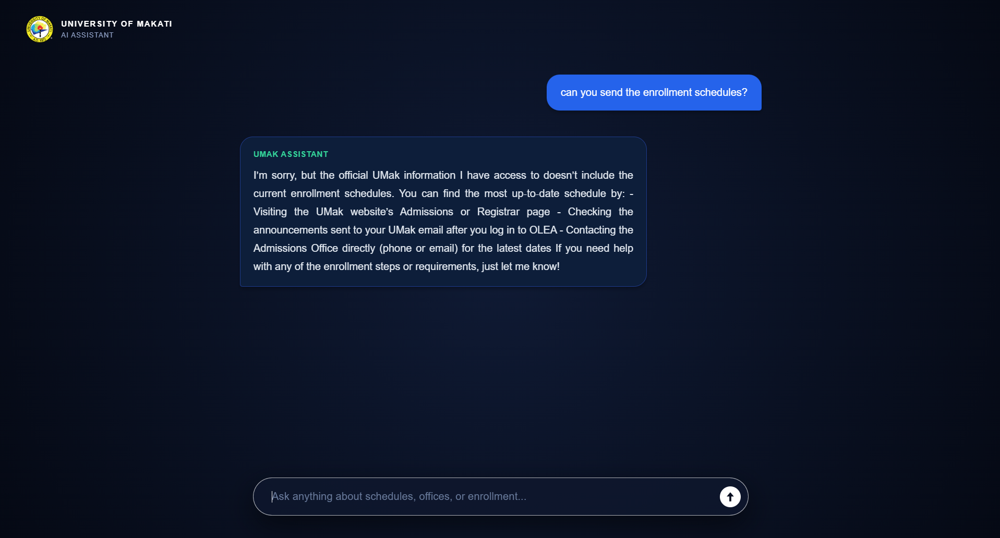

UNIVERSITY OF MAKATI
AI ASSISTANT
Your AI-powered guide for campus navigation, enrollment details, academic schedules, and student services.
No outdated or fake info. Every answer is pulled directly from official UMak handbooks with exact source links.
No outdated or fake info. Every answer is pulled directly from official UMak handbooks with exact source links.

Offices close, but the AI doesn't. Get round-the-clock help for campus navigation, requirements, and workflows 24/7.

One question replaces a walk across campus.
Type a question about enrollment, schedules, or services.

The assistant looks only through the provided university documents.

You get a direct answer and the document it came from, or a clear "Not found".

From question to answer in three steps.